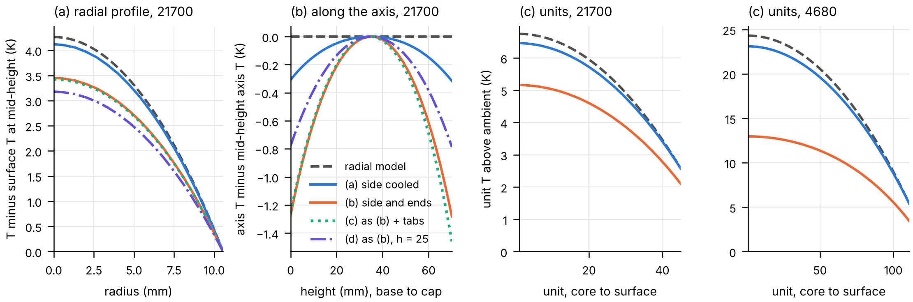
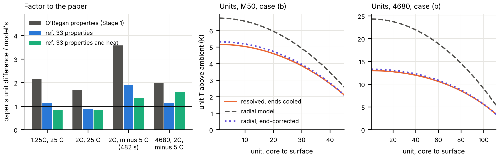
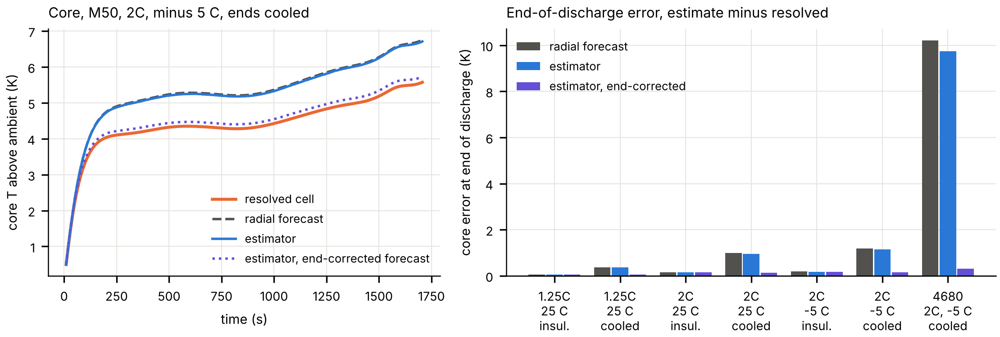

The
axial blind spot of a radial cell model: the temperature field a
multi-unit model assumes, tested on the LG M50 and a 4680
Siddharth Satte, Independent researcher, Pune, India, 27 October 2026
(v1.2.0). doi.org/10.5281/zenodo.23320969. Predictions commit b92f9a8,
public at 11:12 UTC on 12 October before any three-dimensional field was
computed. github.com/siddharth161204-wq/m50-radial-vs-resolved-field.
- In the multi-unit model of Yang, Cui and Tartakovsky (J.
Electrochem. Soc. 173 (2026) 050520), each unit takes its temperature
from a radial model, which in three dimensions means insulated ends.
Under that condition the resolved cell agrees: at 2C and minus 5 C every
unit lies within 0.29 K of the radial value in the LG M50 and within 1.2
K in a 4680. With the ends cooled at the paper’s own h = 400
W/(m2 K), the axial difference along the core that a radial
model cannot see is 37 % of the radial core-to-surface difference in the
M50 (1.28 of 3.45 K) and 32 % in the 4680 (3.44 of 10.61 K), at every
rate and ambient run.
- The radial model then puts every unit too warm: by 0.48 to 1.59 K in
the M50 (mean 1.19 K, 31 of 45 units by more than 1 K) and by 1.9 to
11.3 K in the 4680 (mean 8.0 K). It overstates the unit-to-unit spread
by 36 % (4.17 against 3.06 K) and by 98 % (18.9 against 9.5 K).

Figure 1. 2C and minus 5 C, end of discharge (1706.7 s). Left:
mid-height temperature above the mid-height surface temperature, M50,
the radial model against the resolved cell under the four boundary
conditions. Second: axis temperature relative to mid-height, base to
cap, same cases. Right, two panels: unit temperatures above ambient in
the M50 and the 4680, the radial model (dashed) against the resolved
annulus averages with the ends insulated (a) and cooled (b).
Method
- Heat: PyBaMM’s Doyle-Fuller-Newman model, parameter set Chen2020,
discharging at 1.25C, 2C and 3C from 100 % SOC to 2.5 V at minus 5 C and
25 C, with the lumped thermal model at h = 400 on the side. The total
heat is applied uniformly per volume in every thermal model, and the
4680 gets the same W/m3.
- Properties: O’Regan et al. (Electrochim. Acta 425 (2022) 140700)
through PyBaMM at 25 C: 2938.7 kg/m3, 842.4 J/(kg K), and
1.225 W/(m K) across and 25.09 W/(m K) along the layers. The can is 0.25
mm of steel at 15 W/(m K) and 841.7 J/(m2 K).
- Radial model: the paper’s Eq. 2 and 4 on a solid cylinder, with 45
units (21.1 by 70.1 mm) and 111 units (46 by 80 mm) as equal-thickness
annuli and the can’s heat capacity at the surface. A unit’s temperature
is its annulus average.
- Resolved cell: the scikit-fem cell of the two-cell study
(doi.org/10.5281/zenodo.23253738), with an anisotropic roll and the can
as a shell on every surface. Unit averages are taken over the annulus
and the full height.
- Boundary conditions: (a) side at h = 400, ends insulated; (b) side
and ends at h = 400; (c) as (b) plus two nickel strips (6.2 mW/K each)
to busbars at ambient; (d) as (b) at h = 25. The 4680 runs (a) and
(b).
- Checks:
- With the can on the side only, the resolved cell matches the radial
model within 0.15 %. This holds after the circumferential conductivity
was set to the radial value, because the along-layer value failed this
test by 1.7 % on the coarse mesh near the axis.
- Energy closes to 2e-12; halving every mesh spacing changes the
core-to-surface difference by 0.09 %; an independent axisymmetric solver
agrees within 0.15 %.
Limits
- The source is uniform where the paper’s is unit-resolved and
temperature-dependent. The heat is PyBaMM’s default total, without the
heat of mixing, which would add 36 to 54 % for this set. The
axial-to-radial fractions are the same at every rate and ambient; the
spread overstatement is 34 to 36 % in the M50 and 78 to 101 % in the
4680; the kelvin values scale with the heat.
- The paper’s properties come from its ref. 33, a
pseudo-two-dimensional model with a one-dimensional thermal model of the
same M50, fitted to 1C discharge data; its values were not available
here. The paper’s unit differences are larger than this radial model’s:
2.2 and 1.7 times at 1.25C and 2C at 25 C, where both discharges end
near full, and 3.5 to 3.6 times at 2C and minus 5 C, where the paper’s
discharge ends at 1.34 to 1.50 A h against 4.74 A h here. Its heat is
larger or its conductivity lower. The roll touches the can’s end caps
directly, so the end effects are upper bounds.
- No electrochemical feedback is computed here. The offsets are
temperature offsets, which the paper’s surrogate would turn into current
and energy differences, not energy errors.
Prediction scorecard
| P1 |
Side cooling only: mid-height core-to-surface 3 to 10 K at 2C, minus
5 C |
Held |
4.12 K (central 6 K) |
| P2 |
End cooling changes it by under 30 %, axial over a third of
radial |
Held |
-16 % and 0.37 (central 15 % and 0.5) |
| P3 |
End cooling: radial units 1 to 3 K too warm, about equally, spread
within 20 % |
Failed |
Mean 1.19 K, all positive; the spread falls 27 % |
| P4 |
The 4680’s axial-to-radial ratio is smaller than the 21700’s |
Held |
0.32 against 0.37 (central 0.3 against 0.5) |
| P5 |
At h = 25 both differences are below 1 K at 2C |
Failed |
Radial 3.18 and 2.62 K, axial 0.79 and 0.65 K |
What it means for the
paper’s numbers
Under the condition the paper’s radial model implies, insulated ends,
the resolved field supports it. If a cell’s ends exchange heat as its
side does, the unit temperatures that drive the paper’s current
redistribution are too warm, and their spread too wide by about a third
in the M50 and by up to a factor of two in the 4680, so its 3.45 % and
11.32 % energy overestimates and its difference of more than 30 C across
the 4680 would be expected to shrink, by an amount this study does not
compute.
Stage
2 (v1.1.0): the gap to the paper, and an end correction
Predictions commit 0cb04c3, public at 06:37 UTC on 21 October 2026
before any Stage 2 computation; nine of ten held.
- The paper’s ref. 33 fits its thermal values to one 1C discharge of
the same M50: 0.62 W/(m K) across the layers and 3.44 MJ/(m3
K), against O’Regan’s 1.23 and 2.48. They raise this model’s unit
differences in the M50 by a factor of 1.9 at every condition, taking the
factor to the paper from 1.7 to 2.2 to 0.88 to 1.13 at 25 C, and from
3.5 to 3.6 to 1.87 to 1.91 at 2C and minus 5 C.
- Ref. 33’s electrochemical set in PyBaMM ends the 2C, minus 5 C
discharge at 1.51 A h, where the paper’s ends, with 1.38 to 1.40 times
Chen2020’s heat. With its properties and heat the remaining factor is
0.82 to 0.85 at 25 C and 1.25 to 1.33 at minus 5 C.
- A derived, unfitted sink β (T minus Tamb), with β = 2
he/L and 1/he = 1/h + L/(6 kz), takes
the case (b) unit offset from 1.19 to 0.10 K (M50) and from 7.96 to 0.21
K (4680), and the spread overstatement from 36 and 98 % to 5 and 3 %. It
matches the resolved end share within 0.5 points and the axial
difference at the core within 2 %.

Figure 2. Left: the paper’s unit difference over this model’s, with
each set of inputs (2C, minus 5 C at the paper’s end of discharge, 482
s; the 4680 with the 21700’s heat history). Right: case (b) at 2C and
minus 5 C, end of discharge: resolved unit temperatures, the radial
model, and the radial model with the end correction.
Stage
3 (v1.2.0): a core-temperature estimator on the radial model
Predictions commit 7060663, public at 09:36 UTC on 27 October 2026
before any Stage 3 test run; five of seven held. The two that failed:
that the estimator halves the end-of-discharge miss, and that its
learned error comes within 30 % of the end correction’s sink.
- Ref. 33 (Yang and Tartakovsky, J. Power Sources 664 (2026) 238948)
estimates the core temperature with an ensemble Kalman filter that
assimilates the surface temperature and the terminal voltage and learns
the forecast’s error, in the thermal equation a heat source per layer.
Here the forecast is the radial model with the resolved cell’s heat and
properties, so its only error is the axial one, and the reading is the
resolved mid-length surface temperature every 20 s, with the paper’s 0.1
K noise and 3000 members; the voltage has no counterpart here. The
error’s noise, which ref. 33 does not give, is bracketed at 0.1, 1 and
10 times the source that moves a unit by 0.1 K in one interval, the
middle level registered. Truth is Stage 1’s resolved field, itself a
model.
- With the ends insulated the estimator stays within 0.14 K of the
resolved core on average. With them cooled at 2C and minus 5 C it leaves
1.14 of the forecast’s 1.18 K end-of-discharge miss in the M50 and 9.7
of 10.2 K in the 4680; at ten times the level, 0.48 and 5.9 K. Doubling
the reading’s noise adds 0.02 K to its mean error in that M50 case.
- In the cooled M50 cases its learned error, averaged over the cell
and the second half of the discharge, is 1.4 to 1.7 % of the end
correction’s sink on the same history, and 36 to 44 % at ten times the
level. On the end-corrected forecast, at the registered level, the same
estimator’s mean error in those cases is 0.04 to 0.13 K, against 0.28 to
0.87 K without it, and 0.24 K against 6.6 K in the 4680.
- For the estimator: where the radial model holds, it keeps that
accuracy. Where the ends exchange heat, how much of the axial miss it
removes depends on the error’s noise level, which ref. 33 leaves open:
at 2C and minus 5 C, almost none of the end-of-discharge miss at a tenth
of the registered level, 3 % (M50) and 5 % (4680) at it, and 59 % and 42
% at ten times it. With the one-term end correction in its forecast, its
end-of-discharge error at the registered level is 0.05 to 0.15 K in the
cooled M50 cases and 0.31 K in the 4680.

Figure 3. Left: core temperature above ambient at mid-length, M50, 2C
and minus 5 C, ends cooled, registered level: the resolved cell, the
radial forecast, the estimator, and the estimator on the end-corrected
forecast. Right: end-of-discharge core error, estimate minus resolved,
for each case and method at the registered level.